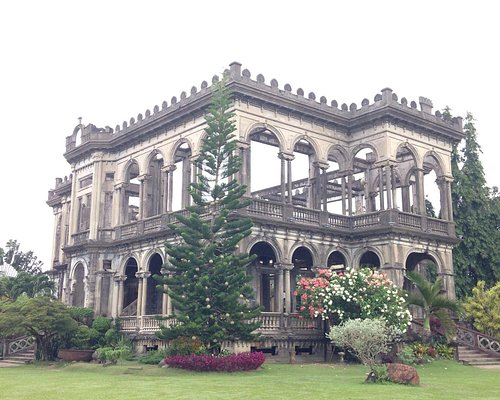
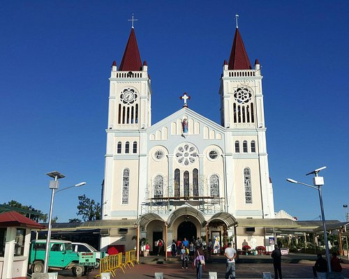
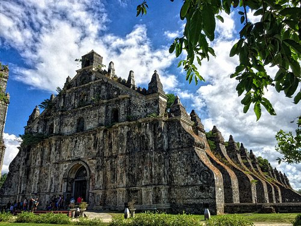
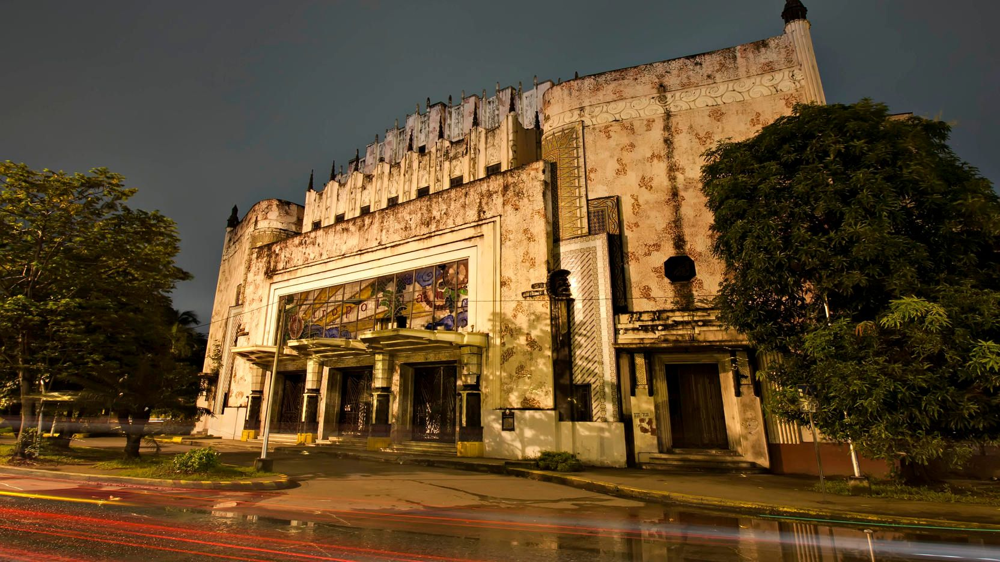
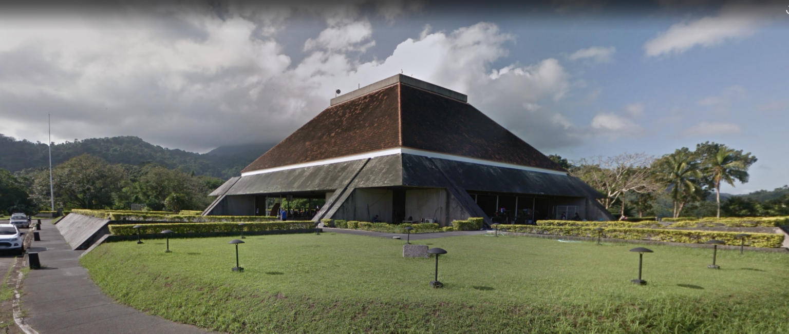
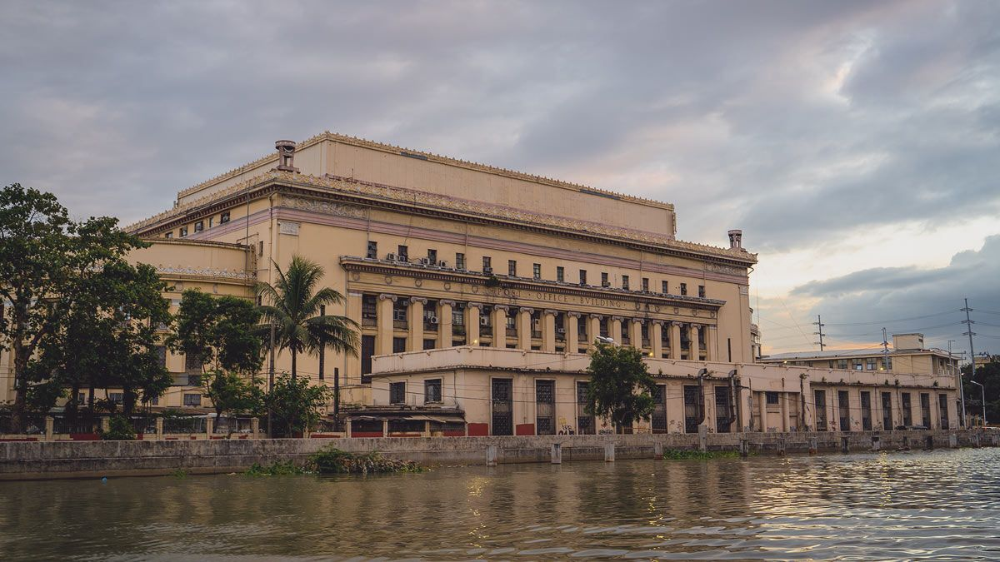
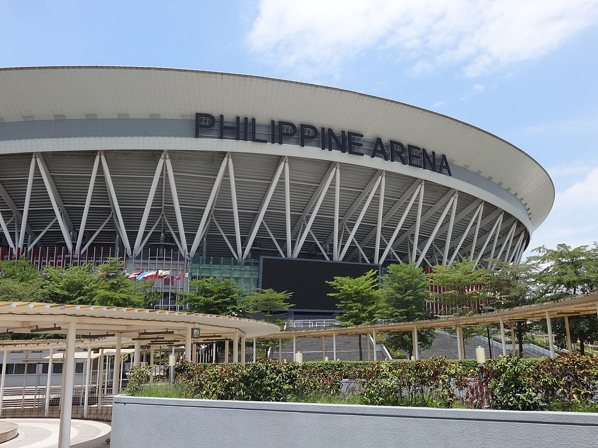

A visual record
Buildings and Architecture
of the Philippines
From earthquake-proof baroque churches to a sugar baron's ruined mansion, structures that trace how the country has built and rebuilt itself.

The Ruins
Built by the sugar baron Don Mariano Ledesma Lacson as a monument of luxury, the mansion was set ablaze during World War II to keep it from American use. What's left are its bare columns and stripped walls — an outline of the house rather than the house itself, and now one of the region's most visited ruins.

Our Lady of Atonement Cathedral
Known locally as Baguio Cathedral, its twin spires sit above the city on a hilltop, visible from most of the surrounding streets. As seat of the Diocese of Baguio, the pink-toned Neo-Gothic building has become as much a wayfinding landmark as a place of worship.

St. Augustine's Church
Also called Paoay Church, its massive coral-stone buttresses were built wide and low for a reason: to survive the earthquakes that regularly shake the region. That engineering answer to a local hazard is what "Earthquake Baroque" describes, and why the church still stands after three centuries.
More landmarks

Manila Metropolitan Theater

Tanghalang Maria Makiling

Manila Central Post Office

Philippine Arena
Architectural styles
The buildings above come from different eras and answer different needs. These are the four styles you will see across this page.
Earthquake Baroque
St. Augustine's Church, Paoay
Wide, low buttresses of coral stone, built to survive the earthquakes that regularly shake the region.
Neo-Gothic
Our Lady of Atonement Cathedral
Twin spires and pointed forms that make the cathedral a landmark visible across Baguio.
Art Deco
Manila Metropolitan Theater
Bold geometry and decorative detail, used here for a public place of performance.
Neoclassical
Manila Central Post Office
Formal, symmetrical lines and columns that give a civic building a sense of order and permanence.